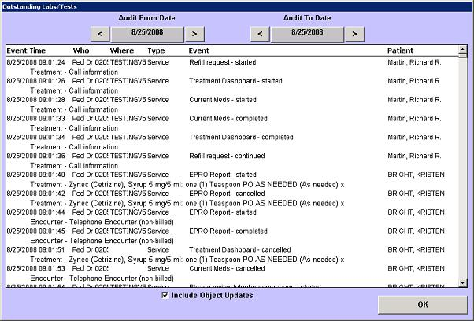

| Solution: |
In this solution...
|
| Details: |
Description
The date or a range of dates can be chosen using the Audit From and Audit To dates at the top of the screen. Access this screen from the Utilities list by selecting the Audit Records button. Screen Example 
Want to Learn More?
|
| Symptoms: |
| ID: 040817009410883 | Last Modified: 04/23/2009 04:20:18 PM |